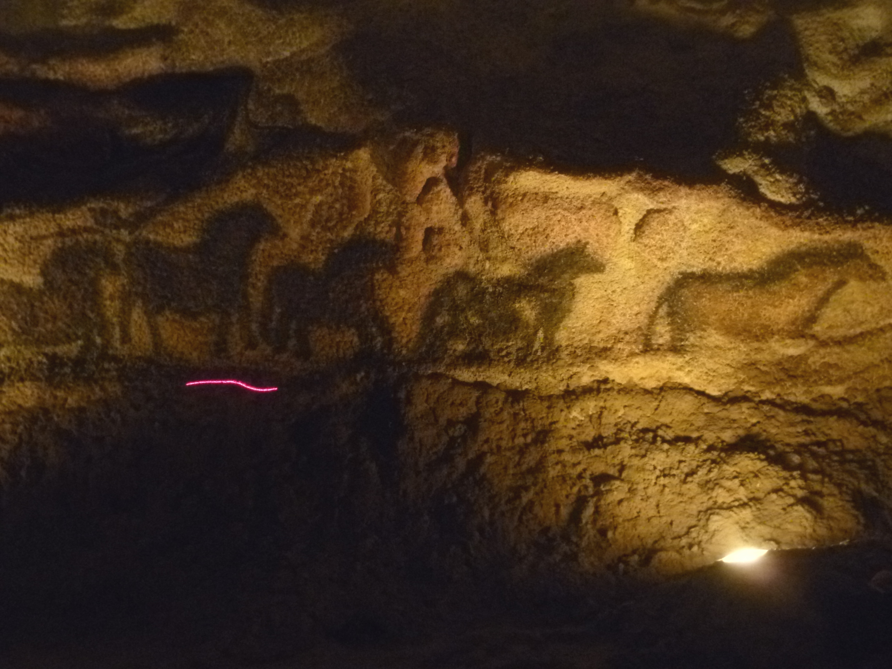
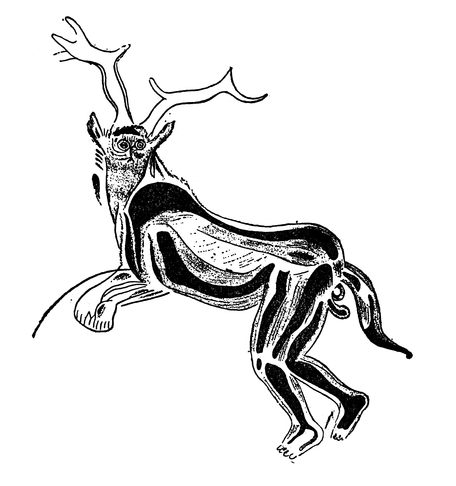

En lo más hondo de la tierra, donde nunca llegó la luz del sol, alguien pintó manadas de caballos y bisontes. La pregunta no es cómo lo hicieron, sino por qué pintar donde nadie iba a mirar.
Ya teníamos figuras que se sostienen en la mano. Ahora bajamos a un espacio distinto: las paredes profundas de las cuevas, donde durante el Último Máximo Glacial el ser humano dejó algunas de las imágenes más hermosas y enigmáticas de toda la prehistoria. Y donde, quizá, nació una de las formas más antiguas de lo religioso: el trance.
Hace unos 17.000 años, en lo que hoy es Francia, alguien se internó cientos de metros en la cueva de Lascaux, cargando lámparas de grasa animal, y cubrió sus paredes de caballos, toros, ciervos y bisontes en movimiento. En Altamira, en el norte de España, otros pintaron un techo entero de bisontes hace unos 15.000 años, aprovechando los bultos de la roca para dar volumen a los cuerpos.

La calidad artística es asombrosa: perspectiva, movimiento, dominio del color. Pero lo verdaderamente extraño no es cómo pintaban, sino dónde. Muchas de estas obras están en rincones remotísimos de las cuevas, en pasadizos estrechos a los que hay que arrastrarse, lejos de donde la gente vivía. No son decoración de un hogar. Son imágenes hechas en la oscuridad absoluta, para casi nadie.
Hace entre 15.000 y 17.000 años se pintaron animales magníficos en el fondo de cuevas oscuras, en lugares casi inaccesibles. Nadie decora así su casa. Eso sugiere que pintar era, en sí mismo, una especie de ritual.
Esa es la gran pregunta. Si estas imágenes fueran simple arte para disfrutar, estarían donde vive la gente. Que estén escondidas en las entrañas de la tierra sugiere que el acto de pintarlas —y el lugar— importaban más que el resultado visible. Se han propuesto muchas explicaciones: magia de caza (pintar la presa para capturarla), marcas de territorio o de clanes, calendarios, mitos. Pero una hipótesis, en particular, conecta estas cuevas con el origen de la religión.
El arqueólogo David Lewis-Williams propuso que muchas de estas imágenes están ligadas al chamanismo y a los estados alterados de conciencia. Su idea, apoyada en el estudio de sociedades cazadoras recientes y en la neurología, es que ciertos motivos abstractos que acompañan a los animales —puntos, retículas, espirales— coinciden con las formas que el cerebro humano "ve" en trance profundo, provocado por la danza, el ayuno, la privación sensorial o las plantas.
Según esta lectura, la cueva era la frontera con el mundo de los espíritus. El chamán se adentraba en la oscuridad, entraba en trance y "atravesaba" la pared rocosa hacia otro mundo; las pinturas serían visiones fijadas en la piedra, o el punto de contacto entre este mundo y el otro. No arte para mirar, sino tecnología para viajar.

En varias cuevas aparecen, además, figuras híbridas como el "hechicero" de Trois-Frères: seres mitad humanos, mitad animales, como el Hombre-león de la entrega anterior. Para los defensores de la hipótesis chamánica, son chamánes transformándose, o espíritus del mundo de más allá de la roca.
La hipótesis del chamán es fascinante y muy influyente, pero conviene tratarla con la misma cautela que el resto. Tiene puntos fuertes: el chamanismo está documentado en muchas culturas cazadoras, y la neurología del trance es real. Pero también tiene críticos: extrapolar de pueblos actuales a hace 17.000 años es arriesgado, y no todos los motivos abstractos tienen por qué venir de un trance.
Lo prudente es quedarse con lo que la evidencia sí sostiene: estas imágenes se hicieron en lugares especiales, con enorme esfuerzo, para algo que iba más allá de lo decorativo. Que ese "algo" fuera exactamente el trance chamánico es una hipótesis poderosa, no un hecho probado. Pero encaja con lo que venimos viendo: un ser humano que, desde muy pronto, busca el contacto con un mundo que no se ve.
Lectura: el arte rupestre y su ubicación en lugares especiales son hechos. Que tuviera función ritual es ampliamente aceptado. La hipótesis chamánica concreta (trance, estados alterados) es influyente pero debatida: seductora y bien argumentada, no demostrada.
Las dataciones de Lascaux (~17.000 años) y Altamira (~15.000–36.000 años según las zonas; las pinturas más famosas de bisontes rondan los 15.000) proceden del radiocarbono y de dataciones por uranio-torio. La hipótesis neuropsicológica del chamanismo fue formulada por David Lewis-Williams y Thomas Dowson (1988) y desarrollada en The Mind in the Cave (2002).
La imagen del "hechicero" de Trois-Frères es un dibujo/calco difundido a partir del trabajo del abate Henri Breuil; algunos investigadores han cuestionado la fidelidad del calco original respecto a la pared. Se muestra aquí como reproducción, no como fotografía de la cueva.
Las críticas a la hipótesis chamánica (por ejemplo, las de Paul Bahn) advierten contra la extrapolación etnográfica. Se mantiene la distinción entre el hecho (arte ritual en lugares especiales) y la interpretación (trance chamánico).